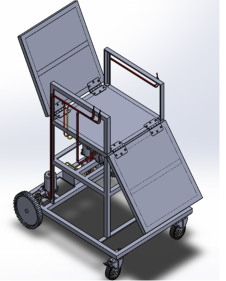
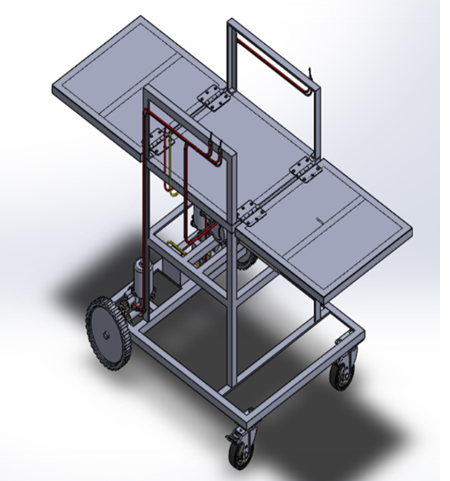
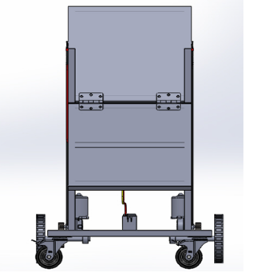

Design & Fabrication of an Automated Chair-cum-Bed Mechanism
A fluid-free, voice-controlled rack-and-pinion system that gives bedridden patients comfort, hygiene and independence.
Replacing hydraulics with a cleaner, smarter mechanism
Hydraulic hospital beds are heavy, leak-prone and need frequent maintenance. Leaks raise hygiene concerns, and valve or switch controls often force patients to depend on a caregiver for even small posture changes.
This project replaces hydraulic actuation with a rack-and-pinion mechanism driven by an electric motor through a self-locking worm gearbox. English voice commands such as “sit”, “sleep” and “stop” let patients adjust posture hands-free, while limit switches, a current sensor and a manual override keep operation safe.
Hydraulic fluid, so no leakage
DC motor drive
Safety layers: limits, current sensing, override
Language today (English); more planned
The people behind the project
Abin C S
B.Tech Mechanical Engineering
Bleson Joseph
B.Tech Mechanical Engineering
Godson V O
B.Tech Mechanical Engineering
Mr. Vishnu Shaji
Asst. Prof., Dept. of ME
Dr. Renjish Vijay
Asst. Prof., Dept. of ME
Vidya Academy of Science & Technology, Thalakkottukara, Thrissur · APJ Abdul Kalam Technological University
From problem to validated design
Identify the need
Reviewed the cost, hygiene and accessibility limits of hydraulic beds for patients who need independent posture adjustment.
Design the rack-and-pinion layout
A compact configuration with a worm gearbox converts rotary motion into smooth linear movement of the head section.
Model in AutoCAD / SolidWorks
2D drawings of the frame, actuator placement and motion zones to plan fabrication and simulation.
Select materials
Mild steel tubes, nylon gears and ABS panels, chosen for strength-to-cost ratio, machinability and low maintenance.
Calculate torque, gear ratio and stroke
Manual calculations and literature estimates to confirm the motor and gearbox can deliver safe, repeatable actuation.
Integrate controls and test virtually
12V DC motor connected to an Arduino UNO with a voice module, then motion speed, load handling and comfort checked through virtual testing.
What the design delivers
Mechanism
Rack-and-pinion with worm gearbox: high torque and self-locking, so the bed holds position even when power is off.
Voice control
Arduino UNO with a voice recognition module and predefined English commands, “sit”, “sleep” and “stop”.
Safety
Mechanical limiters and limit switches at stroke ends, current sensing for overload shutdown, soft start/stop and a caregiver override switch.
Key advantages
- Fluid-free: no leaks, cleaner and simpler servicing
- Compact, modular frame for home and hospital use
- Smooth, quiet, jerk-free posture transitions
- Low-cost, energy-efficient electric actuation
- Modular motor, rack, pinion and gearbox units that are easy to replace
Design drawings



A practical, low-maintenance step toward patient independence
Designed and developed a voice-controlled chair–bed mechanism to assist individuals with limited mobility. Integrating a rack-and-pinion mechanism, DC motor, and worm gear arrangement, the system enables smooth chair-to-bed transformation with enhanced stability and safety. Voice-command operation reduces manual effort, promotes independence, and improves user convenience.
Future scope
Malayalam and Hindi voice support, feedback sensors and closed-loop control. Add new AI features
Beyond
Lightweight aluminium or composite parts and battery-powered operation.